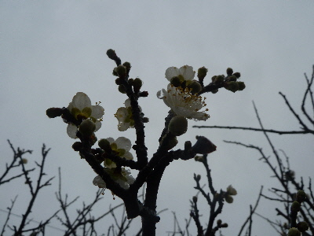
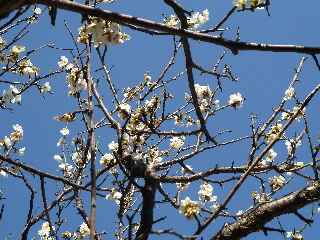
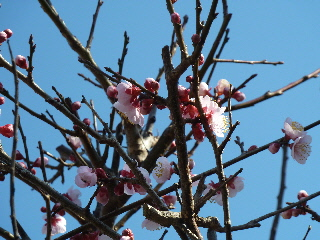
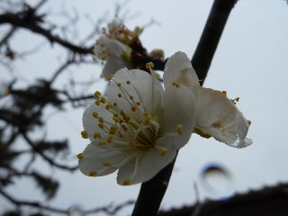
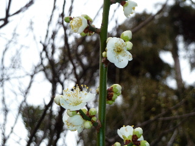
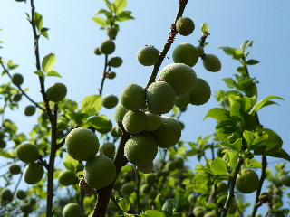

遊びで植物を育てよう
2017/02/05
梅が咲き出しました。
今日は天気が悪くどんよりしていました。

寒いですが、もう梅が咲いてるんですね。
もうすぐ春ですね。
今年は梅の種を植えてみたいな。
【梅TOP】
【果物TOP】
【園芸TOP】
2014/03/08
紅梅も咲き出しました。
白い花の梅は満開です。

梅は咲いてる期間が長くていいですね。

紅梅も咲きだしました。
近くに植わっていたら紅白ですね。
【梅TOP】
【果物TOP】
【園芸TOP】
2014/02/09
今年も梅の季節です。
この梅はいつも寒い時期に咲きます。

去年よりちょっと遅いみたいです。
去年は温かったですもんね。
【梅TOP】
【果物TOP】
【園芸TOP】
2013/02/03
もう梅が咲いてる。
梅ってもう咲く時期でしたっけ？

梅の実が出来る普通の梅がもう咲いていました。
一部ですけど、綺麗でした。
【梅TOP】
【果物TOP】
【園芸TOP】
2013/04/28
梅の実大量です。
今年は花の時季が早かったので、あんまり実が付かないかなと思っていたんですが、沢山なっていました。

【梅TOP】
【果物TOP】
【園芸TOP】
梅干し食べたいから育てます。
【おいしいものを食べよう。】【しっかり寝よう。】
【ソロ活をしよう!】【季節感のあることをしよう。】【動画視聴はほどほどに。】【当サイトの全てのコンテンツは無断転載禁止です。】